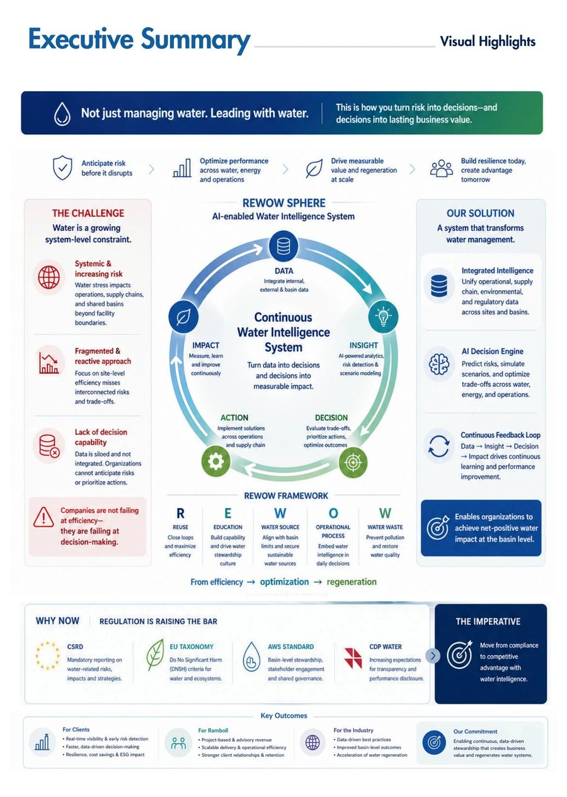

물 리스크는 데이터가 아니라 결정의 공백 — Ramboll 물 스튜어드십 전략
- 질문: CSRD·EU 택소노미·AWS 기준이 높아지는 상황에서 제조 기업이 시설 효율을 넘어 유역 단위 스튜어드십으로 가는 방법
- IKEA(공급망 규모), LEGO(운영 효율), ASML(물 의존도가 높은 핵심 공정) 세 기업의 가치사슬 물 리스크 분석
- SBTN AR3T 기반 신호등 성숙도 진단 도구, REWOW 가치 경로, AI 물 인텔리전스 대시보드 개념 설계
- L'Oréal Dry Factory(현 Waterloop) 모델을 '효율 이후' 단계의 벤치마크로 활용
1위5개 팀 중 (클라이언트·수업 평가)
3곳글로벌 제조사 분석
6명다국적·다세대 팀
| 본인 담당 | 내용 |
|---|---|
| 팀 리드 | 업무 분담, 일정, 클라이언트 커뮤니케이션 전담 |
| 진단 설계 | 성숙도부터 진단한 뒤 처방하는 구조 — 같은 틀로 세 기업의 다른 프로필을 읽어냄 |
| 보고·발표 | 최종 보고서 작성 총괄, Ramboll Water에 권고안 발표 |
배운 점: 환경 리스크는 사업장과 맥락마다 다르고, 성과는 복잡한 데이터를 운영·투자 우선순위로 번역할 때 생긴다.